¿Qué es el competitivo de Pokémon?
El teambuilding es el arte de construir un equipo Pokémon. Es una de las actividades principales que junto al
estudio del metajuego y la práctica continua en combates conforman el ciclo habitual de preparación para un
torneo. El teambuilding suele venir acompañado de un proceso previo de theorycrafting donde se plantean ideas y
se discute (en grupo o a través de un monólogo interno) la viabilidad de estas y su ajuste al formato.
El teambuilding no siempre significa crear equipos desde cero; también incluye optimizar equipos existentes. La
adaptación permite a un jugador tomar un equipo (creado por su parte o proveniente de otro) y mejorarlo en el
contexto de lo que se está jugando en ese momento. Bien para que el jugador esté más cómodo jugando, bien para
poder contrarrestar estrategias que de otra forma sería difícil o incluso para sorprender con algo nunca visto.
Características del competitivo
- Estrategia
- Equipos actuales más usados
- Torneos más importantes en los últimos años
- Mejores jugadores

Top 5 Equipos más usados
Equipo 1
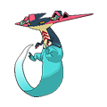 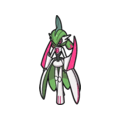 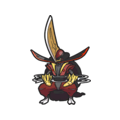 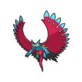 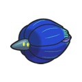 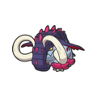Modo de juego: Presionar desde el turno 1 con ataques potentes, velocidad y sin dar tiempo al rival a montar defensas. Pokémon Rol / Objeto / Movimiento clave Dragapult Sweeper físico; Cinta Elegida; Garra Dragón, Fantasma Furtivo Gardevoir Paradoja (Iron Valiant) Mixed Attacker; Bola de Energía + Impulso Energía; Mismo Destino, Puño Drenaje Rey Gambito Cleaner; Restos o Vidaesfera; Juego Sucio, Sombra Vil Luna Rugiente Booster ofensivo; Banda Focus; Ala de Dragón, Danza Dragón Glimmora Suicide Lead; Chaleco Asalto o Banda Focus; Trampa Rocas, Espinas Tóxicas Colmilargo Tanque ofensivo; Restos o Casco Dentado; Terremoto, Giro Rápido
Equipo 2
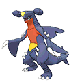 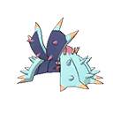 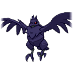 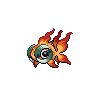 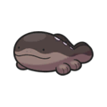Modo de juego: Controlar el ritmo, curarse, desgastar lentamente con cambio de estado y hazards. Pokémon Rol / Objeto / Movimiento clave Garchomp Lead bulky; Casco Dentado; Trampa Rocas, Terremoto Toxapex Pared física; Lodo Negro; Tóxico, Recuperación, Escaldar Corviknight Anti-Hazards; Restos; Despejar, Cuerpo Pesado Chi-Yu Special wallbreaker; Gafas Elegidas; Llamarada, Pulso Umbrío Clodsire Wall mixto; Restos; Tóxico, Recuperación, Terremoto Torkoal Clima y soporte; Roca del Sol; Día Soleado, Giro Rápido
Equipo 3
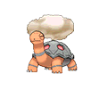 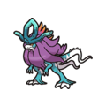 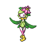 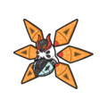Modo de juego: Combina ofensiva y defensiva, con control del clima y apoyo táctico. Pokémon Rol / Objeto / Movimiento clave Ondulagua (Walking Wake) Especial ofensivo bajo sol; Roca del Sol; Hidrovapor, Rayo Solar Lilligant Hisui Sweeper con boost; Vidaesfera; Danza Agil, Patada Ígnea Moteado Férreo Especial mixto; Bola Energía; Llama Final, Puya Nociva Arcanine Soporte Intimidación; Botas Gruesas; Velocidad Extrema, Fuego Fatuo Amoonguss Estado y recuperación; Restos; Espora, Gigadrenado Maneo Fantasma (Flutter Mane) Ofensiva especial veloz; Gafas Elegidas; Bola Sombra, Poder Oculto
Equipo 4
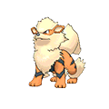 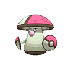 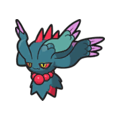 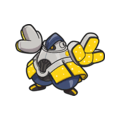 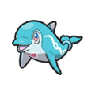Modo de juego: Combina ofensiva y defensiva, con control del clima y apoyo táctico. Pokémon Rol / Objeto / Movimiento clave Ondulagua (Walking Wake) Especial ofensivo bajo sol; Roca del Sol; Hidrovapor, Rayo Solar Lilligant Hisui Sweeper con boost; Vidaesfera; Danza Agil, Patada Ígnea Moteado Férreo Especial mixto; Bola Energía; Llama Final, Puya Nociva Arcanine Soporte Intimidación; Botas Gruesas; Velocidad Extrema, Fuego Fatuo Amoonguss Estado y recuperación; Restos; Espora, Gigadrenado Maneo Fantasma (Flutter Mane) Ofensiva especial veloz; Gafas Elegidas; Bola Sombra, Poder Oculto
Equipo 5
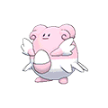 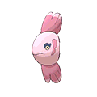 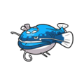Modo de juego: Equipo muy resistente que gira en torno a soporte defensivo, recuperación y desgaste continuo. Ideal para partidas largas y controladas. Pokémon Rol / Objeto / Movimiento clave Corviknight Defensor físico y anti-hazards; Restos; Despejar, Cuerpo Pesado, Respiro Clodsire Pared especial y soporte; Restos; Tóxico, Recuperación, Terremoto Amoonguss Curador de equipo y estado; Regeneración + Restos; Espora, Puño Drenaje Toxapex Tanque y controlador; Lodo Negro; Tóxico, Recuperación, Escaldar Blissey Pared especial máxima; Restos o Chaleco Asalto; Deseo, Amortiguador, Llamarada Alomomola Soporte físico y sanación global; Casco Dentado; Deseo, Protección, Escaldar
Torneos más importantes
- Campeonato Mundial Pokémon – El evento más grande y esperado donde los mejores jugadores del mundo compiten.
- VGC Series – Torneos anuales con reglas específicas para cada temporada.
- Torneos regionales – Clasificatorios en diferentes países y regiones para acceder a etapas mayores.
- Torneos online – Eventos celebrados a través de plataformas como Pokémon Showdown o Nintendo Switch.